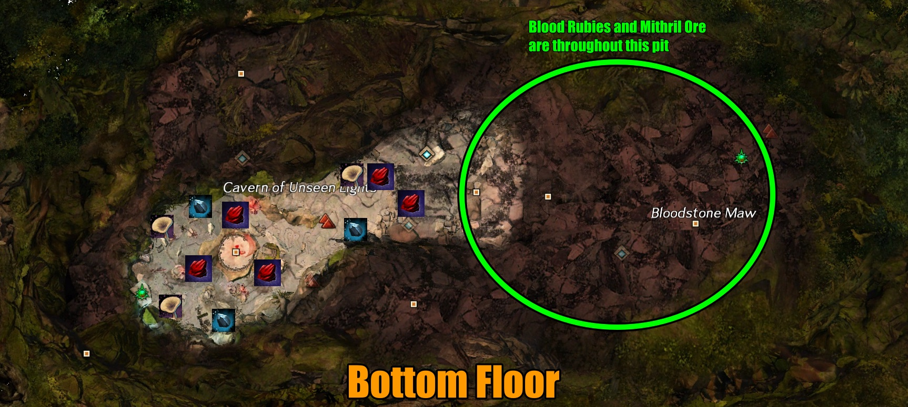

Bloodstone Fen

Follow the recommended priority of events. This farm is kind of RNG, depending on whether or not the Bloodstone Maw meta is up. Because this meta is not on a global timer, the only way to predict when this event will be up is knowing when it last ended. Otherwise, when starting this farm, you can assume that it will spawn sometime within the hour (since it has a 1 hour cooldown).
In general, I tend to start my farm around the time the Night Meta spawns (Spirits). While the first event takes a long time due to scaling, I rotate the squad with all the seeker/cleric events. Once the first meta event is complete, then we focus on the champions/final escort. If the Bloodstone Maw did start, we ditch and head there instead. Not ideal, but it happens.
If both Bloodstone Maw isn't up or Spirits, then I focus on the seeker/cleric events as they can scale to champions and finish quickly. If Hablion is up, we do that once for the daily chest. For a chance of pace, we do the Fragmented Wastes events if a rift appeared on the ground or is nearby the Hablion event. I generally avoid doing them because the squad has a harder time catching up from all the gliding/mounting constantly.
Criteria
Great
Meh
Avoid
Events
Recommendation: Priority of Events
14-15, 18, 16-17,
Sort by:
| # | Qty | Name | Description | Upscale | Extra |
|---|---|---|---|---|---|
| 1 | 4 | Defeat the jade construct | There's an Armored or Bow Jade construct. Bow is more range while Armored is more melee and tanky | 1 Guaranteed champ | 10 Unbound Magic (from Bloodstone Stalagmite) |
| 2 | 1 | Defeat the jade construct (two) | Just like event #1, but both Armored and Bow are summoned. Kill the Bow first and drag Armored together | 2 Guaranteed champ | Boss chest, 2 Blood Rubies, 10 Unbound Magic (from Bloodstone Stalagmite) |
| 3 | 1 | Disperse the Unbound Guardian | If you go to the green circle, you get a damage buff. Blue circles teleport you, red circles damage you | 1 Guaranteed champ | Boss chest, 3 Blood Rubies, Unbound Magic (scattered) |
| 4 | 1 | Defeat the patrolling justicar | Similar to a White Mantle Knight. Spawns during the day | 1 Guaranteed champ | |
| 5 | 1 | Defeat the patrolling crased agent | Similar to a pistol/pistol thief. Spawns during the day | 1 Guaranteed champ | |
| 6 | 1 | Exorcise the angered spirits stalking the Haunted Canyons | Kill A LOT of spirits. They are all spread through the ground area. Takes a while to progress the event | ||
| 7 | 1 | Defeat Savant Ehrin | 1 Guaranteed champ | ||
| 8 | 1 | Defeat Nyle the Compassionate | 1 Guaranteed champ | ||
| 9 | 1 | Defeat Ritualist Josa | 1 Guaranteed champ | ||
| 10 | 1 | Defeat Thief Lloyd | 1 Guaranteed champ | ||
| 11 | 1 | Escort Alari Doubleblade | Regular escort with multiple waves | Possible champs, Mob density+ | Boss chest, 1 Blood Ruby. Once per day, per character |
| 12 | 9 | Defeat beasts disgorged from the unstable rift | There are 9 possible locations. Some rifts apply burn, stun, or knockdown. It's just random mobs | Possible champs, Mob density+ | |
| 13 | 1 | Defeat the enormous bloodstone elemental | After defeating 7 of #12 events, this champion spawns and the cycle repeats | 1 Guaranteed champ | |
| 14 | 1 | Exorcise the angered spirits haunting Zealot's Overlook | Lots of spirits in the buildings, some on the outside. Kill until progress bar is filled | ||
| 15 | 1 | Defeat Justicar Hablion | At around 50% and lower, the boss creates aoes that teleport you into the sky. Use gliding to get back down without fall damage | 1 Guaranteed champ | Boss chest. 3 Blood Rubies. Once per day, per character |
| 16 | 1 | Kill the seekers to halt the cleric's supply of bloodstone | Kill all seekers. CC helps greatly with stopping the seekers and to kill them quickly. Each seeker increases the event duration until it fails | Possible champs, Mob Density+ | |
| 17 | 1 | Kill the White Mantle Cleric | This happens regardless if event #16 fails or not. Very quick kill | ||
| 18 | 1 | Treasure Mushroom | Chance for Invisible Boot Box. 1 Guaranteed rare and spirit shard |
Bloodstone Maw
There are only 3 phases to this meta. For each event, there is a time limit so make sure to try your best to complete as fast as possible.
Phase 1:
This phase repeats 4 times. Destroying either a Champion Jade Armor or Jade Bow. Jade Armors mainly deal melee damage, knockbacks, and stuns while Jade Bows mainly deal projectile damage. For Jade Armors, it's best to be wary of telegraph skills and avoid melee range when it's spinning. They also have more defense and die slower than Jade Bows. Both Jade champions will have a CC phase around 75%. Make sure to CC during this phase to deal damage.
Phase 2:
Similar to Phase 1, but you'll have to kill two Champion Jades (one each). All players should gather close and destroy the Jade Bow first because 1) it will cause the Jade Armor to move closer so players can cleave and 2) Jade Bows die faster.
Phase 3:
If you've ever done Vale Guardian in the raid Wing 1, then it's the same boss. Except, the green circles don't wipe a group. Instead, the green circle provides a special action key that will enhance your damage by 200%. Blue circles teleport you randomly and red circles deal large damages over time. The boss will likely choose a sole person to tank so make sure everyone stays close so he does not move as much!
Spirits
Day time:
This phase is super simple and only contains two champions. They spawn shortly after Day starts.
Night time:
Once Night time begins, there will be an event that covers most of the ground floor to destroy angered spirits. This event scales heavily and can take a few minutes to complete.
Afterwards, there will be 4 champions, spawning one at a time. Once the 4th champion has been defeated, an escort will spawn.
Fragmented Wastes
After 8 Rifts closed, there will be a Champion Bloodstone Elemental at a low fragmented platform. The meta repeats itself after its defeat. Rifts can still spawn regardless of having the champion up or not.
Nodes

Criteria
High Quantity
Meh Quantity
Low Quantity
| Type | Node | Info | Cooldown | |
|---|---|---|---|---|
| Ore | 
|
Blood Ruby | Use to exchange for ascended trinkets or consume for Unbound Magic. There is a daily account limit | 24 hours |
| Ore | 
|
Mithril Ore | Chance to receive crystals | 1 hour |
| Ore | 
|
Orichalcum Ore | Chance to receive rare orbs | 24 hours |
| Log | 
|
Palm Sapling | Chance to receive Foxfire Clusters, Hidden Troves (crystals), or rare Palm Lumber Cores | 1 hour |
| Log | 
|
Ancient Sapling | Chance to receive Foxfire Clusters, Hidden Treasures (orbs), or rare Palm Lumber Cores | 24 hours |
| Plant | 
|
Pile of Flax Seeds | Chance to receive Flax Fiber, rare Flax Blossom | 1 hour |
| Plant | ")
|
Jungle Plant | Chance to receive Cassava Root, Clove, Lemongrass, Pile of Allspice Berries, and the very rare Maguuma Lily | 1 hour |
| Plant | 
|
Mussel | Chance to receive the very rare Freshwater Pearl | 1 hour |
| Plant | 
|
Sawgill Mushroom | Chance to receive the very rare Giant Mushroom Spore | 1 hour |